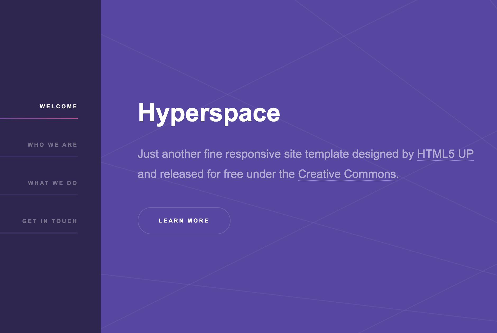
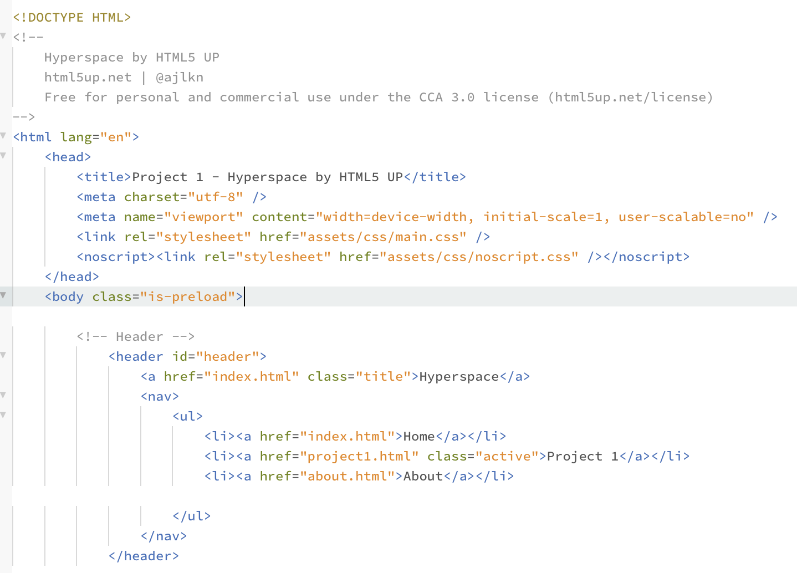
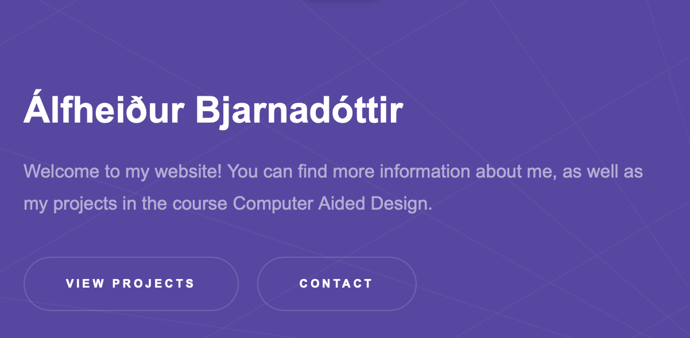
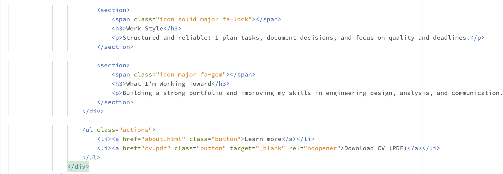
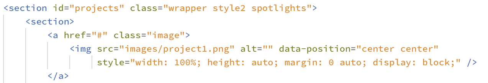
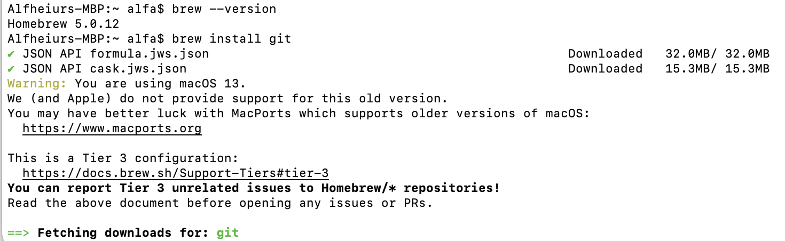

Project 1
This page documents the steps I took to build and publish my portfolio website for this course. The site is based on the Hyperspace template by HTML5 UP.
1. Template source & decision making
Firstly, I watched the YouTube videosI explored different HTML5 UP templates and chose Hyperspace because it is clean, has a nice vibe to it, responsive, and has a sidebar navigation that works well for a portfolio (Home, Projects, About, Contact).

Figure 1: The Hyperspace template from HTML5 UP.
2. Initial design assumptions
-
After opening the template in Phoenix Code, I started customizing it by replacing the placeholder content with my own text and links. I also adjusted the structure and layout to match my preferences and to make sure all required information for the assignment would be included and easy to find.
- Navigation: Sidebar links on the home page scroll to sections (Projects / About / Contact).
- Subpages: Each project has a “Learn more” button leading to a separate page (e.g.
project1.html). - Consistency: I kept the template’s styling so all pages look consistent on desktop and mobile.
- Content structure: Projects first (quick overview), then About/Resume, then Contact. The next step was to rename the generic.html file to project1.html. I then copied this file a few times to use as a starting point for the next assignments. After that, I edited the navigation so the project pages could be accessed from the menu.

Figure 2: Project 1.
Next, I worked on the front page banner. I added my name and a short description under it explaining what the website contains. Below that, there is a button that I decided to link to the Project page, there you can find all the projects. if you would to press one of the projects it should lead you to a more detailed discription of the project.
Next, I worked on the front page banner. I added my name and a short description under it explaining what the website contains. Below that, there is a button that I decided to link to the Project page, there you can find all the projects. if you would to press one of the projects it should lead you to a more detailed discription of the project.

Figure 2: Front banner.
I added both an About Me section and a Contact section to better fit the purpose of the website. I initially had difficulties linking my CV correctly, so I used an AI assistant to troubleshoot the issue. After following the suggested steps, I successfully added a working CV download link.

Figure 2: Code to add a working CV download link.
Finally, I added images to the Project 1 section on the front page and to the Project 1 page itself. This was the part I found the most challenging. At first, when I inserted the first image, it was too large and didn’t fit the layout properly. I used a method I found on W3Schools, which has clear and helpful HTML guides. I checked the image’s original width and height in its properties and then resized it while keeping the proportions, so it would display at the size I wanted.
I collected screenshots while working (code, folder structure, and GitHub Pages settings).
I resized images to web friendly sizes (around 1200px width) and saved them as JPG/PNG to keep loading times fast.
All images were placed in images/ and linked using relative paths.

Figure 2: Code to make my image fit the right way.
3. What do I want to get out of the course?
I’m not completely sure what to expect from this course yet, except that I hope it will be fun and a bit different from most of the other Mechanical Engineering courses. I’m looking forward to trying out different computer aided manufacturing processes, such as laser cutting and milling. When it comes to the final project, I haven’t decided what I want to do yet. I have not looked into a lot about the possibilities so far, but I would like to make something that feels creative, interesting, and genuinely enjoyable to work on.
4. Tools and information sources
- Phoenix Code for editing HTML/CSS
- HTML5 UP template files
- Browser preview for testing layout and responsiveness
- Online documentation (e.g., HTML/CSS references) when needed
5. Uploading to GitHub (GitHub Pages)
First, I watched the instructional videos provided by the teacher to understand how to upload a website to GitHub and publish it with GitHub Pages. After that, I opened the official Git installation page for macOS git-scm.com/install/mac. Since the page recommended Homebrew, I installed Homebrew through the Terminal.
Figure 4: GitHub Pages settings used to publish the website.
After Homebrew was installed, I followed the instructions to install Git using the command brew install git. During this step I ran into some issues with my terminal configuration (PATH/profile), which prevented the commands from working correctly at first. I asked for help from AI and fixed the problem by adding the Homebrew shell environment setup and confirming that Homebrew was recognized in the terminal.

Figure 4: GitHub Pages settings used to publish the website.
Once Git was installed successfully, the next step was to initialize a Git repository inside my website folder, commit the files, and push everything to GitHub. After uploading the project to a GitHub repository, I enabled GitHub Pages under Settings → Pages and selected the main branch as the source. This published the site online and generated a public link.
Challenges and solutions
- Preview issues: Fixed by opening the full folder as a project (not a single file) in the editor.
- Broken styling/images: Fixed by keeping the original folder structure (
assets/,images/) and checking paths. - Updates not showing: Solved by committing/pushing changes and refreshing the page (hard reload if needed).
6. Repository link
GitHub repository: github.com/alligunn/Vefsida-AAG